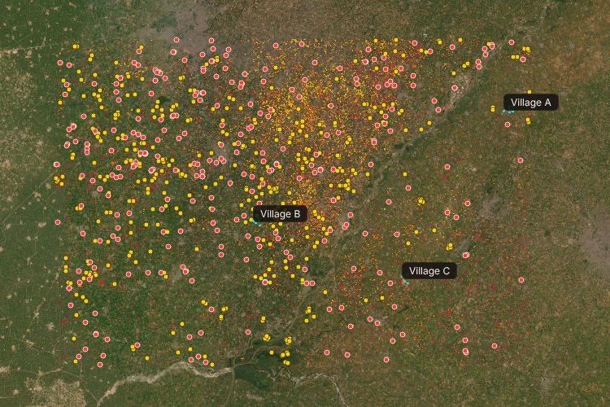
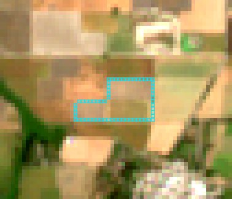
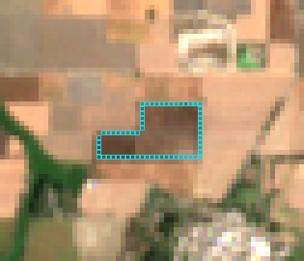

What's left of the 2021 level, by 2025
Paddy straw burnt every October and November is a large share of Delhi's winter smoke.
The official measure is the count of fires seen by NASA's MODIS and VIIRS, which pass at 10:30 am and 1:30 pm.
Schemes that pay or fine farmers on that count now pay for nothing.
of large farm fires in Punjab in 2024 and 2025 started after 3 pm, seen by geostationary satellites that image every 15 minutes.
did in 2021. NASA researchers found the same shift with GEO-KOMPSAT-2A. The fire is gone by the next morning's pass. The scar isn't.

fields Sentinel-2 caught in flames at 11:20 IST on Oct 18. Only 8% had a VIIRS detection within 1 km that day.
burn scars between the Oct 13 and Oct 18 passes. Only 2.9% have a VIIRS detection within 375 m.
80 × 52 km of Amritsar, Tarn Taran and Kapurthala. 23,963 ha of scars since Sep 23.
| No green crop | NDVI after < 0.35 |
| Char signal | MIRBI rises ≥ 0.25 and reaches ≥ 1.6 (ISRO NRSC's burnt-area index) |
| Darker | SWIR-1 drops ≥ 0.02; visible ≤ 0.10; NIR ≤ 0.25 |
| Not noise | 3×3 median, ≥ 0.4 ha patch |
| Clear view | Sentinel-2 scene classes; hazy passes skipped |
| Burnt field | ≥ 20% of it scarred over the season |


Each field is compared with its own last clear view, so a cloudy pass doesn't hide a burn. A dozen published thresholds, so anyone can recompute the result exactly.
Inside the 375 m footprint of each VIIRS fire detection, the rule calls 18.9% of harvested land newly burnt. On random harvested land: 5.6%.
A positive-unlabeled gradient-boosting model trained on fields Sentinel-2 caught in flames, against 3.7× for the rule in the same test. The rule makes the verdicts.
Honest limit: this shows the rule finds burns. It isn't a per-field accuracy figure. The best published Punjab model reports a Dice score of 0.64, so a pilot needs ground checks on a sample.
Paying part of the reward upfront raised compliance by 10 percentage points (Jack, Jayachandran, Kala, Pande, Money (Not) to Burn, J-PAL).
$ python pipeline/recheck.py docs/evidence/plot-19.json --pact 0xC892…6b2D --plot 19
recomputed: 74.55% of the plot scarred, between 2026-10-13 and 2026-10-18
evidence hash, recomputed: 0x8cb26d12…bac7b26b
evidence hash, file: 0x8cb26d12…bac7b26b
evidence hash, on-chain: 0x8cb26d12…bac7b26b (74.55%)
MATCH: the verdict stands on public data.
Funders: Punjab and Haryana's residue-management schemes, CSR budgets, and bio-CNG and biomass plants that need straw collected, not burnt.
Cooperatives and NGOs enrol farmers and help them challenge a verdict.
Regulators (CAQM) get burnt area that doesn't depend on the hour of the fire.
Scale: Sentinel-2 covers all of Punjab and Haryana every 2–5 days, free. One 80 km area runs in minutes on a laptop.
Adoption: payments can stay on the existing direct-benefit-transfer rails, with the pact as the public ledger they settle against.